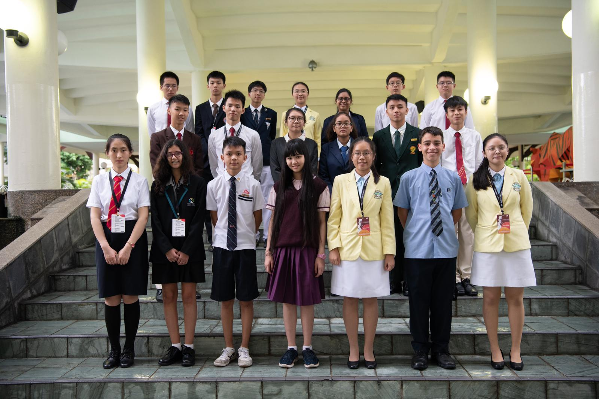

Youth Faculty 5: The Arts as a unifying force
Under Youth Assembly 2: The Arts
Hello! We are Youth Faculty 5, and the issue we are discussing is The Arts as a Unifying Force. The Arts as a unifying force builds up the sense of national pride and culture, giving people a sense of identity. Art is a universal language where all people can communicate through art as it portrays humans’ emotions. Arts as a unifying force has the ability to integrate differently-abled people into the community and break barriers between people of different backgrounds.
Some problems of using arts as a unifying force include: misinterpretation of arts (People think that arts are just paintings and drawings, however, the truth is that art is everywhere), negative propaganda inducing hatred (Secondly, art may be used as Negative propaganda inducing hatred among people) and depreciation of Art (where Arts is not getting enough appreciation among the community especially among parents) which could potentially lead to art being used as a dividing force rather than a unifying one.
Other problems include the hierarchy of ability, arts events are of smaller scale/too many arts events, arts may also be limited by the state censorship.
The solutions we developed were to integrate art into education, to have more community theatres and street plays especially in war-torn areas. there is also a need to have more cross-cultural student exchange in order for people to experience new cultures and forms of art.
Our YF brings to you: Cultural Potpourri 2020 is an annual event where students from all over the globe go and present others culture. We have decided to bring it forward and make it an international event where students from all over the globe can appreciate art in its many forms. The first edition can be held in the SLC where student leaders from all over the globe convene to present other’s cultures. Potpourri is essentially a medley of cultures come together and embrace unity.
The Lens
YF5’s Lens Video is a promotional video on our proposed event (solution) , Culture Potpourri 2020. In this video, we showcase the highlights of our event and also the interviews with our stakeholders. We aim to raise awareness about The Arts as a Unifying Force and try to encourage other countries to consider this cultural event, in hopes of pushing this event on a global scale.
Exhibition
During the exhibition, our YF presented on the content that we included in our slides in a manner that would draw a crowd. We also presented the rationale for our solution and also introduced the stakeholders in our solution to the crowd. Furthermore, we evaluated the success criteria for our solution and showcased some insights of our YF’s topics. We attempted to get them to vote for us in exchange for sweet.
(here we would include your exhibition boards, hopefully you left it in ops room)
Self-Proclaimed Best YF 5
We as yf 5 would like to thank the OT and admin for all the blood and sweat that they have put into planning SLC and for making SLC such a memorable event for all of us.
From your beloved facils, mickelson n jovy. Even though the time we spend together was short, we thoroughly enjoyed it and we hope you all did too. We were proud to be the facils of YF5. We will definitely miss y’all, we will definitely remember yall.